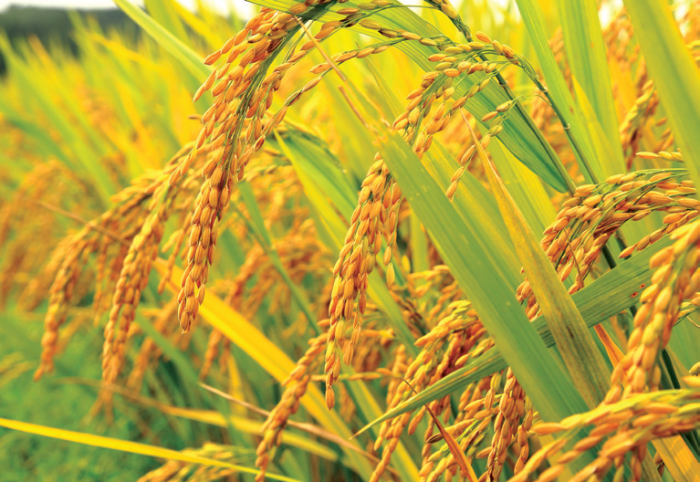

The learner will be able to
Appreciate the relationship between humans and plants.
Recognise the origin of agriculture.
Perceive the importance of organic agriculture.
Understand the different conventional methods of plant breeding.